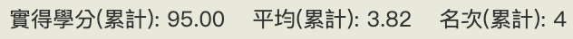
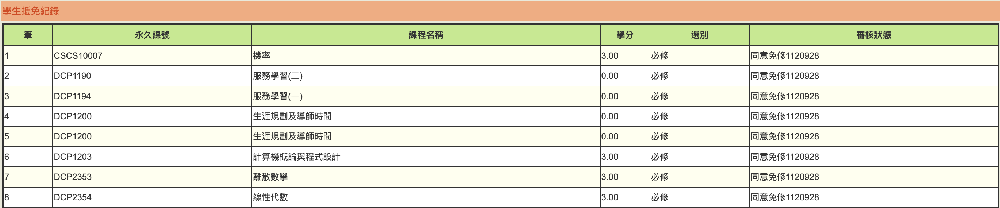

背景
轉系前 — 交大應數大二升大三
大學前完全沒接觸過程式語言
相關修課經歷 & 成績
因為我大一的時候並沒有想要轉系的想法，
所以一堂課都沒修、也沒在顧成績 QQ，
這點對以後推甄跟轉系都蠻傷的
大一結束後我暑修 DS&OOP 只拿A-，我是小丑。
整個大二我修了 演算法概論、計算機網路概論、基礎程式設計、資料庫系統概論、競技程式設計(一)、數位電路設計
（還有應數的離散跟機率）。 其實修這樣對轉系的人來說超級少的，但因為我是申請降轉大二所以我覺得沒有關係
我修資工相關的課除了競程拿了一個 B 以外都是拿 A 或 A+（但計網概只有A- QQ）
我在應數系2年的累計排名是第4名，但第3名跟我一樣在升大三這年轉走了，GPA醜到不忍直視TT

準備轉系考
從112學年開始，想轉資工的人其實可以把整個下學期的 GPE 考試都當作轉系考來看待。
資工系辦在3月突然改了轉系的審查規定，結果我6月才知道，小丑是我。我在考轉系考前把 GPE Helper 的題目全部刷完，
( 我的 github 上找得到我寫的 AC code) ，最後轉系考當天2小時破台600分離場。
我覺得要準備GPE其實不難，如果你對C++語法跟演算法不熟的話我推薦 “YUI HUANG 演算法學習筆記”，
基礎的東西都會了之後直接刷 GPE Helper 就行。
如果對刷題沒興趣的話，可以大二把本系的課退光，All in 資工系的課，穩穩的顧好GPA再申請平轉大三應該都會通過，
但我不太建議這種做法，我覺得如果GPE有400分以上的實力的話修資工系的選修用到C++才不會功課或lab做不出來。
感想
其實讀應數系想走資工的人非常多，而且每年都有高中打演算法競賽上來的，
所以很容易找到電神跟一起修課的朋友。而且應數系大一就會修完導師時間跟服務學習、很多課也可以免修，
對想轉資工的人來說其實蠻方便的。
即使我轉系考滿分，我轉到資工系前還是覺得我失敗的機率很高，結果最後資工系把我放進去了，
感謝審查教授沒把我刷掉。
抵免學分：
